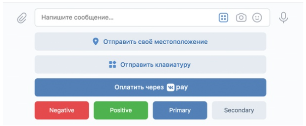

Создание клавиатуры и БД подписчиков
Стандартная клавиатура выглядит следующим образом:

Кнопки бывают следующих типов:
Text - отправляет на сервер текстовое сообщение указанным в label
Location по нажатию на кнопку отправляет местоположение в беседу
VK Рау – открывает окно оплаты с определенными условиями
VK Apps - открывает указанное приложение VK
Структура данных для клавиатуры, выглядит следующим образом.
В первой паре передается настройка, сохраняется ли эта клавиатура на одно действие или до тех пор, пока не будет передана следующая ("one_time": false). Далее в массиве передаются кнопки и их типы. Чтобы включить клавиатуру в боте необходимо передать параметр keyboard, в методе message.send.
Основная цель - предоставить пользователю возможность выбрать группу (у нас будут Друзья, Одноклассники и Программисты), сохранять выбор в базу данных, а также от лица админа отправлять сообщения всем пользователям с определенной группой. Получается своеобразный новостной канал
Но для начала нужно включить возможность создавать клавиатуру в настройках бота.
Переходим в настройки бота сообщения > настройки для бота. Включаем возможности бота, тут же мы можем добавить кнопку Начать, поставим галочку на этом пункте, она нам еще пригодится.
Данная настройка добавляет кнопку начать, если у пользователя и бота раньше не было сообщений. При нажатии на тестовые кнопки, в тело запроса добавляется строка 'payload': '{"button":"1"}", что совпадает с объявлением payload в массиве кнопок. Это поможет нам разделить кнопки от идентичного текста, написанного пользователями.
Задание 1. Обработка кнопки начать
Пишем функцию для обработки.
В файле urls.py нужно поменять вызываемую функцию для бота (вместо index написать get_message)
Теперь нужно написать функцию start, которая вызывается, если в запросе присутсвует кнопка начать
Эта функция отправляет сообщение пользователю и передает клавиатуру из трех кнопок
Задание 2. Обработка обычных сообщений
В случае если пользователь не нажимает кнопки, а просто пишет текст функция должна обрабатывать код нашей старой функции. Немного поправим ее. Уберем проверку на новые сообщения и уберем лишние табуляции. А также переименуем ее в talk() и убираем @csrf
А в функции get_message добавим else, в котором и будет вызываться функция talk
Задание 3. Создание базы данных
В уже существующей БД (database.sqlite) нам нужно создать еще две таблички:
-
Таблица groups со следующими атрибутами:
- id - целое число, нужно дописать также primary key autoincrement
- group_name - текст
-
Таблица user со следующими атрибутами:
- id - целое число, нужно дописать также primary key
- chat_id - целое число
- id_group - целое число
- Добавляем foreign key атрибута id_group в таблицу groups (id)
Теперь нужно добавить записи в таблицу groups
- (1, 'friends')
- (2, 'classmates')
- (3, 'programmers')
Задание 4. Создание функции для обработки запросов в БД
После успешного создания новых таблиц, закомментируйте код, который их создавал и добавлял значения.
Напишем функцию, которая будет добавлять значения в таблицу user. Основная идея: пользователь выбирает группу с помощью кнопок, а мы добавляем его в таблицу user. В целом код похож на добавление значений в таблицу phrases
Задание 5. Использование созданной функции
Возвращаемся к нашему фалу views.py и используем созданные нами функции. В случае, если кнопка не start, значит вызываем метод add_member().